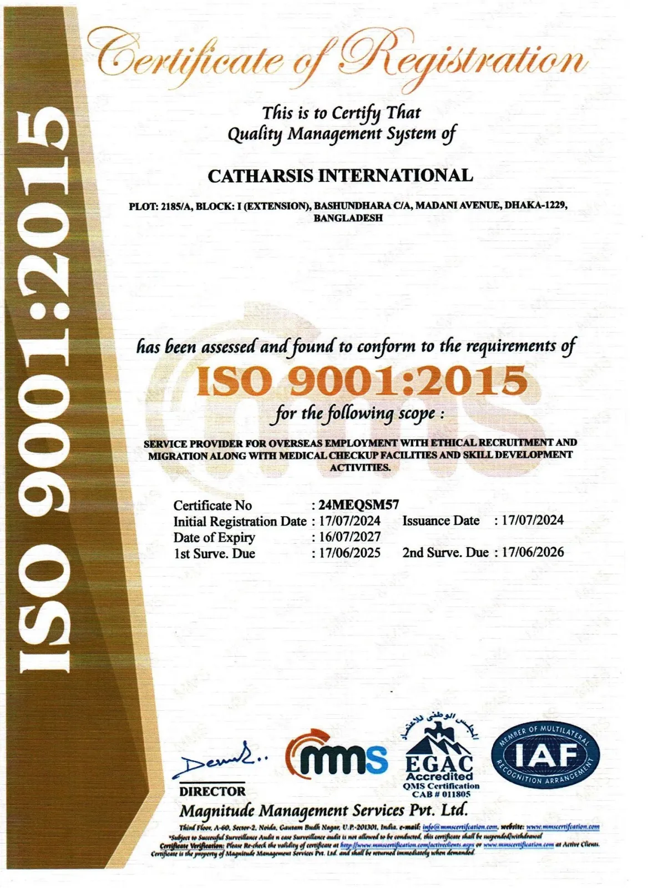

Recruiting with a Record
You Can Check & Trust
Founded in 1997 in Dhaka, Catharsis International places Bangladeshi workers with employers across Asia and the Gulf — under Govt. License RL.-549, ISO 9001:2015 certification and BAIRA membership.
Home / About Catharsis
Our Story
Who We Are
Catharsis International excels in sourcing and mobilising a diverse range of professionals — skilled, semi-skilled and unskilled workers. With a strategic focus on meeting specific requirements of overseas employers, Catharsis stands out with its extensive testing facilities and efficient mobilisation processes.
The agency boasts dedicated infrastructure including its own training centre, medical facilities and travel agency. This integrated approach has established Catharsis as a premier one-stop service provider in international manpower recruitment.
Corporate Identity
Mission & Vision
Guiding principles driving our ethical recruitment practices and commitment to global standards.
Our Mission
Creating value & tailored solutionsWe intend to create value of our business through satisfying our associates and partners. We strive to help clients and partners to achieve their target and develop their objectives by providing specific recruitment solutions.
Our Vision
Sustainable excellence & worker welfareCatharsis Group aims to become the leading organisation committed to deliver sustainable excellence in business performance by focusing on the benefit of our stakeholders. We are devoted to ensure the satisfaction of our clients and to provide job seekers a healthy, safe and excellent working environment.
Strategic Vision
What We Set Out To Do
Being a reliable agency, Catharsis International works to serve overseas employers and Bangladeshi talent with maximum transparency. Our goal is to set the gold standard as Bangladesh's most trusted and ethical manpower recruitment partner.
Executive Leadership
Leadership & Governance
Guided by certified ethical leadership and rigorous international quality standards.

Mr. Mohammed Ruhul Amin
Proprietor, Catharsis International · Est. 1997
Has spearheaded Catharsis International since its founding in 1997, establishing it as a pioneer in ethical manpower recruitment. Personally holding certifications from IOM/UN Migration and comprehensive training in RBA labour, ethics, and human rights standards.

ISO 9001:2015 Certification
Catharsis International maintains ISO 9001:2015 certification for its internal operational quality management system, ensuring standardized workflows, documented procedural controls, and continuous quality control across all internal recruitment operations.
Governance Hierarchy
Organizational Structure
Official Organogram demonstrating Catharsis International's executive and operational hierarchy.
Core Operating Principles
Three values, applied to every file we open
At Catharsis International, our reputation rests on these three uncompromising principles, applied to every candidate interview, employer requirement, and international deployment.
Respect & Meritocracy
Respect is best demonstrated by delivering exceptional quality to clients and candidates alike. We hire and promote strictly on merit, honouring the diverse cultures we operate across and upholding human dignity at every step.
Integrity & Transparency
Integrity allows reaching the right decisions faster. At the heart of integrity is total transparency in Catharsis Group's actions, motives, timelines, and terms — "Walking the talk" to build lifelong trust with every partner.
Sense of Urgency & Speed
Speed and simplicity are fundamental. We operate with a laser-focused goal orientation, breaking bureaucratic barriers and reducing friction to ensure swift, flawless candidate deployments.
Ethical Recruitment Leader
Zero Cost Migration for Bangladeshi Workers
Since 2021, Catharsis International has facilitated zero-cost and ethical migration pathways across key international destination countries — upholding worker rights, zero recruitment fees, and full government approval.
Media & Press Featuring
Catharsis in National & Global News
Highlighting our ethical recruitment milestones, worker welfare initiatives, and corporate coverage across leading press publications.
সব খরচ বহন করছে ক্যাথারসিস: বিনা খরচে মালয়েশিয়া গমনের স্বপ্নপূরণ
এখন টিভি জাতীয় সংবাদ প্রকাশনা — ক্যাথারসিস গ্রুপ কর্তৃক মালয়েশিয়াগামী কর্মীদের সমস্ত অভিবাসন খরচ বহনের ওপর বিশেষ রিপোর্ট।
Zero Cost Migration from Bangladesh: ইন্টারভিউ ও নির্বাচন পদ্ধতি
প্রবাস বার্তা চ্যানেল রিপোটিং — ক্যাথারসিস ইন্টারন্যাশনাল কর্তৃক স্বচ্ছ ও বিনামূল্যে কর্মী নির্বাচনের সাক্ষাৎকার গ্রহণ প্রসেস।
সম্পূর্ণ বিনামূল্যে মালয়েশিয়া: আরও ১১৯ কর্মীর সফল বহির্গমন
একটানা শূন্য অভিবাসন খরচে প্রবাস বার্তা কাভারেজ — ১১৯ জন দক্ষ কর্মী ফ্লাইট পেয়ে সফলভাবে মালয়েশিয়া পৌঁছানোর চিত্র।
Zero Cost Migration: 31 Workers Flying to Malaysia
ওয়ার্ল্ড মাইগ্রেশন গ্লোবাল কাভারেজ — ৩১ জন বাংলাদেশি কর্মীর শূন্য খরচে মালয়েশিয়ায় নিয়োগ লাভ ও ফ্লাইটের আন্তর্জাতিক খবর।
সম্পূর্ণ বিনামূল্যে ২০ কর্মী গেল মালয়েশিয়া: ক্যাথারসিস গ্রুপ ইনিশিয়েটিভ
ক্যাথারসিস ইন্টারন্যাশনালের সৌজন্যে কোনো ফি বা খরচ ছাড়াই বিমান টিকিট ও ভিসা প্রসেসিং পেয়ে বিদেশে কাজের নতুন দিগন্ত।
Zero-Cost Migration & Ethical Media Protection
Catharsis International operates strictly under ISO 9001:2015, IOM UN Migration, and RBA international labor standards, protecting candidates from third-party exploitation.
Zero-Cost Migration & Ethical Media Protection
Catharsis International operates strictly under ISO 9001:2015, IOM UN Migration, and RBA international labor standards, protecting candidates from third-party exploitation.
Ready to work with us?
Start a conversation with Catharsis International
Whether you are an employer with a vacancy or a worker seeking placement — we have the process and the record to help.